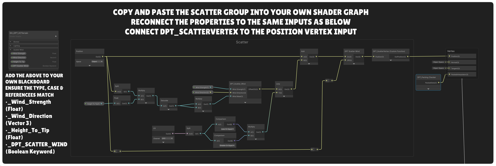

Guide 3D Scatter
Répartissez de la végétation, des rochers, des maillages personnalisés, des prefabs, des particules et des sons spatialisés à partir de définitions réutilisables pouvant cibler plusieurs biomes du Terrain Atlas.
Sur les petits écrans, faites défiler les tableaux larges horizontalement pour consulter toutes les colonnes.
Le système 3D Scatter place des maillages instanciés et des points d’émission de particules directement à partir des données de biomes du Terrain Atlas. Un scatter object contient des règles de placement réutilisables, des variantes de maillage, des couches de particules et éventuellement des sons. Plutôt que de recréer une configuration d’herbe pour chaque biome, ajoutez plusieurs Target Biomes au même objet, avec éventuellement un multiplicateur de densité propre à chaque cible.
Le Scatter est destiné aux éléments répétitifs de surface, comme l’herbe, les fleurs, les champignons, les pierres et les petits accessoires. Il ne modifie pas le maillage du terrain et ne crée pas un GameObject distinct pour chaque instance. Les colliders physiques sont facultatifs et peuvent être limités par la distance ; les maillages visibles restent instanciés sur le GPU.
Comprendre la bibliothèque Scatter
La configuration du Scatter est commune à la bibliothèque de biomes Terrain Atlas, et non enregistrée séparément dans l’Inspector de chaque biome. Ouvrez la section 3D Scatter de la fenêtre Vertex 3D Terrain pour créer et modifier la bibliothèque.
| Élément | Rôle | Conséquence importante |
|---|---|---|
| Scatter Object | Enregistre les règles de placement réutilisables, les variantes de maillages ou prefabs, les effets de particules superposés, les colliders facultatifs, l’audio ainsi que les réglages du vent et d’interaction avec le joueur. | Configurez-le une fois pour plusieurs biomes ; utilisez Biome Lock et Permanent selon les besoins. |
| Target Biome | Permet à cet objet Scatter d’apparaître là où contribue le biome Terrain Atlas sélectionné. | Chaque cible dispose de son propre Density Multiplier, de 0 à 2. |
| Scatter Output | Choisissez Meshes, Particles, Meshes + Particles ou Audio Only. | L’audio est configuré indépendamment et peut accompagner n’importe quelle sortie. Audio Only crée des points sonores sans maillages ni particules visibles. |
| Mesh Variant | Sélectionne un preset intégré, un maillage importé ou un prefab ainsi que sa probabilité relative de sélection. | Les prefabs personnalisés fournissent les maillages, matériaux et données de collider pour le Scatter instancié. |
| Scatter Settings | Gère la graine aléatoire, les lots, la distance, les transitions LOD, la densité lointaine et les limites de sécurité. | Ces réglages sont partagés par la bibliothèque Scatter, plutôt que répétés sur chaque objet. |
| Active Terrain Renderer | Associe le profil à la racine du terrain sélectionné et soumet les rendus instanciés au GPU. | Les instances ne correspondent pas à des milliers de GameObjects dans la scène. |
Créer votre premier objet Scatter
- Utilisez le pipeline Terrain Atlas et assurez-vous que des biomes sont peints sur le terrain.
- Ouvrez 3D Scatter dans la fenêtre Vertex 3D Terrain. Si aucun profil n’existe, créez la Scatter Library.
- Cliquez sur + Add Scatter Object et donnez-lui un nom explicite, par exemple Meadow Grass.
- Sous Target Biomes, sélectionnez un ou plusieurs biomes de la bibliothèque actuelle.
- Commencez avec Density Multiplier à 1 pour chaque cible.
- Réglez Density (touffes par mètre carré), Spacing, la plage Coverage, la pente, l’échelle et l’alignement sur la surface.
- Laissez Scatter Output sur Meshes pour cette configuration d’herbe. Ajoutez un Mesh Variant avec le preset Grass intégré, un maillage importé ou un prefab. Pour les particules, suivez la configuration des particules ci-dessous.
- Attribuez ou vérifiez le matériau, activez GPU Instancing si demandé, puis utilisez Rebuild Scatter après des modifications importantes si l’aperçu ne s’est pas déjà actualisé.
Exemple : créez un objet Meadow Grass ciblant Lush Grass à ×1,0, Dry Meadow à ×0,65 et Forest Soil à ×0,25. Le même maillage d’herbe, le dégradé de couleurs, la rugosité et le vent sont réutilisés sur les trois surfaces.
Aperçu dans l’éditeur et actualisation des outils
Utilisez Preview à côté du titre 3D Scatter pour afficher le Scatter hors du Play mode. Cette option est désactivée par défaut sur les nouveaux renderers et ne modifie pas le rendu à l’exécution. Lorsqu’elle est activée, le bouton associé Update After Stroke apparaît et est activé par défaut. Les placements existants restent visibles pendant l’utilisation d’un outil de terrain ; les sources affectées sont mises à jour à la fin de l’opération. Si vous le désactivez, les mises à jour peuvent avoir lieu pendant l’opération.
Les curseurs Scatter appliquent leurs modifications lorsque vous relâchez la souris, évitant ainsi de relancer le placement à chaque valeur intermédiaire. Les reconstructions importantes sont réparties entre les mises à jour de l’éditeur ; les placements actuels peuvent rester visibles pendant la préparation des nouvelles données.
Pour les particules Continuous, activez également Preview Particles sur l’effet. Dans la Scene view, activez Effects et Particle Systems. L’outil propose de corriger ces options si elles masquent les aperçus activés. Les effets Player Movement et l’audio se testent en Play mode. Animate Preview est un réglage distinct qui actualise continuellement le vent et les matériaux animés.
Cibler plusieurs biomes avec une seule configuration
Un objet Scatter peut cibler autant de biomes Terrain Atlas que nécessaire. Le sélecteur affiche le nom et l’ID numérique du biome actuel. Utilisez + Add Target Biome pour allonger la liste.
| Contrôle | Signification | Exemple |
|---|---|---|
| Biome | Biome Terrain Atlas sur lequel cet objet Scatter peut apparaître. | Grassland, Forest Soil ou toute autre entrée de la bibliothèque actuelle. |
| Density Multiplier: 0–2 | Multiplie la densité de base de cet objet Scatter uniquement pour ce biome cible. | 1 correspond à la densité normale ; 0,5 à la moitié ; 0 désactive cette cible ; 2 permet une densité double. |
À la frontière peinte entre des biomes, le système évalue la contribution combinée des biomes ciblés par l’objet Scatter. Ainsi, un seul objet réutilisable peut traverser une limite Grass/Forest sans dupliquer sa définition.
Chaque instance acceptée conserve le biome qui lui est associé selon la contribution de sa cible à cette position. Un seul objet d’herbe peut donc réagir différemment lorsqu’un modificateur de biome dynamique n’affecte qu’un de ses biomes cibles.
Contrôles de placement
Où trouver Scatter Output : dans la fenêtre Vertex 3D Terrain : déployez 3D Scatter, puis ouvrez un Scatter Object en cliquant sur son nom ou sa flèche. Le menu Scatter Output se trouve directement sous Target Biomes et au-dessus de Placement. Sélectionnez Meshes, Particles ou Meshes + Particles.
Sous Placement, Biome Lock détermine si les changements dynamiques de biome influencent le groupe, tandis que Permanent conserve sa répartition enregistrée entre les chargements. Player Interaction active le réglage Bend Distance pour les maillages compatibles. Consultez distinction entre Biome Lock et Permanent pour connaître la différence.
| Contrôle | Signification | Conseil d’utilisation |
|---|---|---|
| Scatter Output | Meshes dessine les variantes définies ; Particles crée des points d’émission sans variantes de maillage ; Meshes + Particles combine les deux. | Les objets Scatter existants utilisent Meshes par défaut. Meshes + Particles emploie les variantes de maillage pour déterminer les placements. |
| Biome Lock | Maintient le groupe indépendant des changements dynamiques de biome, notamment de densité et de teinte, et ignore la réduction de densité à distance. | Utile pour la végétation et les accessoires qui doivent garder le même aspect malgré les changements de biome. Cela ne remplace pas l’enregistrement des placements avec Permanent. |
| Permanent | Conserve la disposition enregistrée des instances entre les chargements de scènes et de parties. | À utiliser pour les arbres, rochers ou autres objets dont les positions doivent rester fixes. Les modifications dans l’éditeur peuvent actualiser cette disposition. |
| Player Interaction / Bend Distance | Permet aux maillages compatibles de se courber à proximité des composants Player Surface Effects dont Scatter Interaction est activé. Bend Distance limite le déplacement des pointes en mètres dans le monde. | Activez-le pour l’herbe et les plantes souples. Consultez le Guide des collisions et interactions du joueur. Les sorties contenant uniquement des particules ne proposent pas ces contrôles de maillage. |
| Density: 0–100 clumps/m² | Densité de base attendue des instances avant l’application des multiplicateurs Target Biome et de la densité dynamique à l’exécution. | Commencez avec une valeur faible, puis augmentez-la en surveillant le nombre d’instances et la couverture lointaine. |
| Coverage Min / Max: 0–1 | Autorise les placements uniquement lorsque la couverture cumulée des Target Biomes se situe dans la plage sélectionnée. | Augmentez Min pour exclure les mélanges peu marqués. Diminuez Max sous 1 pour exclure les zones entièrement couvertes par un biome. Max à 1 conserve le placement habituel à l’intérieur des zones. |
| Spacing | Distance minimale entre les centres des touffes de cet objet Scatter, y compris entre les tuiles de terrain. La valeur 0 ne fixe aucune distance minimale. | Augmentez-la pour réduire les regroupements et les chevauchements. Le nombre final d’instances peut alors être inférieur à celui défini par Density. Cette distance s’applique aux centres : les grands maillages peuvent encore se chevaucher. |
| Max Slope: 0–90° | Exclut les surfaces plus pentues que la limite choisie. | L’herbe nécessite souvent une pente maximale plus faible que les rochers ou les débris de falaise. |
| Scale Min / Max | Plage d’échelle uniforme et aléatoire des instances acceptées. | Préférez une plage limitée pour obtenir une variation naturelle sans différences de taille trop visibles. |
| Alignment: 0–1 | Interpole entre le Up Mode choisi et la normale du terrain. | À 0, les objets restent droits selon la direction verticale sélectionnée ; à 1, ils suivent entièrement la normale de la surface. |
| Offset | Déplace l’instance le long de la normale de la surface échantillonnée. | Utilisez un léger décalage positif ou négatif si un maillage semble flotter ou s’enfoncer. |
| Enable Wind | Active DPT Scatter Wind pour les maillages de cet objet Scatter. S’affiche pour Meshes et Meshes + Particles lorsque le shader attribué prend en charge DPT Scatter Wind. | Activez-le pour les maillages souples compatibles. Les effets de particules disposent de leur propre contrôle Follow Wind. Les matériaux VCCORE emploient leurs réglages de vent d’origine. |
Biome Lock et Permanent : deux réglages distincts
Biome Lock rend le groupe Scatter indépendant des changements dynamiques de biome et de la réduction de densité lointaine. Il sert aux objets qui ne doivent ni disparaître, ni se raréfier, ni changer de couleur lorsqu’un modificateur dynamique agit sur l’environnement. C’est le nouveau nom de l’ancien réglage Static Scatter.
Permanent enregistre la répartition générée avec la scène de terrain, afin que les mêmes objets conservent leur position après rechargement de la scène ou de la partie. Les modifications dans l’éditeur peuvent mettre à jour cette répartition. Utilisez-le pour les arbres, les rochers, les points de repère et les distributions dont l’agencement doit rester fixe.
Ces contrôles sont indépendants : un groupe Permanent peut encore réagir aux changements dynamiques de biome, sauf si Biome Lock est également activé. À l’inverse, Biome Lock ne garantit pas à lui seul l’enregistrement des positions exactes. Activez les deux pour obtenir des positions stables et ignorer les changements dynamiques de biome.
Exemple : pour conserver une forêt, activez Permanent afin de mémoriser l’emplacement de chaque arbre. Activez aussi Biome Lock uniquement si ces arbres doivent ignorer les changements de densité ou de couleur des biomes dynamiques. Pour une herbe saisonnière qui peut disparaître en hiver, laissez Biome Lock désactivé.
Placer des roseaux uniquement sur les berges
- Créez un objet Scatter Reeds en ciblant uniquement Water uniquement.
- Choisissez une plage Coverage telle que 0.15–0.65 pour placer des roseaux à la transition Water/Mud, tout en excluant l’eau pure de couverture 1.
- Modifiez la largeur de la transition peinte et la plage de couverture pour définir la bande, puis réglez Density et Spacing pour obtenir la quantité et l’écartement souhaités.
Coverage additionne tous les biomes ciblés. Si vous ciblez à la fois Water et Mud, leur couverture totale peut être de 1 sur toute la transition, ce qui exclut cette zone pour la même plage. Ciblez uniquement le biome dont la couverture partielle indique le bord souhaité. Coverage filtre les surfaces admissibles, tandis que Density Multiplier modifie la quantité de touffes sur chaque biome.
Presets intégrés, maillages personnalisés et prefabs
Mesh Source permet d’utiliser un preset intégré, un maillage personnalisé ou un prefab comme source de Scatter instancié sur le GPU. Le bouton rouge Remove Mesh Variant supprime les variantes de maillage supplémentaires.
Chaque objet Scatter peut contenir plusieurs Mesh Variants. Relative Chance est un poids de sélection relatif, pas un pourcentage devant totaliser 100. Utilisez différentes valeurs de Shape Seed pour varier un maillage intégré sans modifier la graine de placement. Des infobulles décrivent les presets.
| Preset intégré | Utilisation | Caractéristiques de la forme |
|---|---|---|
| Grass / Short Grass / Tall Grass | Prairies, végétation couvre-sol et plantes plus hautes. | Choisissez une silhouette adaptée à la scène ; les géométries proches et lointaines réduisent le coût des populations éloignées. |
| Flowers | Petites zones fleuries. | Variez les graines et les dégradés pour diversifier les résultats. |
| Lavender | Épis floraux violets dressés. | Les grappes de fleurs et le nombre limité de feuilles rendent le maillage plus simple que de nombreuses petites fleurs distinctes. |
| Ferns / Clover / Shrubs | Sous-bois feuillus et petits buissons. | Ajustez l’échelle et l’espacement pour limiter les chevauchements du feuillage. |
| Reeds | Zones humides et plantations sur les berges. | Tiges plus petites par défaut ; associez-les à une bande de couverture et à un espacement adapté. |
| Pebbles | Petits amas de pierres. | Utilisez Smoothing Angle pour obtenir un éclairage plus doux ou des faces anguleuses. |
| Mushrooms | Détails du sol forestier. | Le dégradé de couleurs suit la hauteur locale de chaque élément généré. |
| Crystals | Amas minéraux à facettes. | Smoothing Angle vaut 0 par défaut pour conserver des faces nettes et reste réglable. |
| Fallen Branches | Débris au sol. | Petites branches attachées et forme orientée vers le sol. Vérifiez l’alignement et le décalage sur les fortes pentes. |
Ombrage et propriétés de surface
Tous les presets intégrés, y compris Crystals, disposent de Smoothing Angle: 0–180°. À 0, les faces conservent leurs normales planes ; à 180, les normales des faces adjacentes peuvent être fusionnées. Les valeurs intermédiaires lissent les raccords doux tout en conservant les arêtes plus marquées. Cela modifie l’éclairage, pas la silhouette ni le réglage général Smooth / Sharp du terrain.
Le Vertex Colour Ramp est évalué du bas vers le haut de chaque élément généré. Smoothness va de 0 (rugueux) à 1 (poli) et vaut 0.2 par défaut pour les nouvelles variantes. Metallic contrôle la réponse métallique de 0 à 1.
Les maillages générés stockent Metallic dans UV3.R. UV3.G contient la valeur DPT encodée d’échelle/rugosité issue de Smoothness, et non la valeur brute de Smoothness. Un shader personnalisé doit décoder ces données pour les utiliser correctement.
Scatter émissif
Activez Emissive sur une variante intégrée, puis utilisez les couleurs HDR du dégradé pour la luminosité et son alpha pour définir la zone lumineuse. DPT stocke cette couverture dans l’alpha des sommets, comme pour les biomes émissifs. Une couleur HDR ne suffit pas à activer l’émission. Les réglages d’émission du matériau restent applicables ; le bloom visible dépend du post-traitement de la scène, et l’émission ne crée pas de source lumineuse.
Maillages personnalisés et sources prefab
Les variantes Scatter personnalisées acceptent un maillage importé ou un prefab comme source. Pour un maillage importé, attribuez 3D Mesh, l’index de sous-maillage facultatif, Material et éventuellement Distant Mesh. Sans Distant Mesh, le maillage proche est réutilisé.
Lorsqu’un prefab est attribué, le système Scatter extrait ses maillages, matériaux et définitions de collider pour le rendu instancié sur GPU et les collisions facultatives. Le prefab fournit des données : le système n’instancie pas de copie complète du GameObject prefab pour chaque instance visible. Les arbres et autres modèles importés en plusieurs parties peuvent ainsi être instanciés sans devoir fournir uniquement un maillage FBX.
Les maillages personnalisés conservent leurs normales, couleurs de sommet et données de surface UV3 d’origine ; les contrôles intégrés d’ombrage, Metallic, Smoothness et Emissive ne les réécrivent pas. Si DPT Scatter Wind est pris en charge et activé, une copie temporaire est préparée avec les données de vent/biome, sans modifier l’asset source.
Le choix du matériau est important. Scatter utilise GPU Instancing. Choisissez des matériaux compatibles avec les données du maillage source et activez GPU Instancing si demandé. Si le matériau de la variante reste vide, le matériau du terrain source est utilisé lorsque cela convient.
Colliders Scatter facultatifs
Les groupes Scatter peuvent utiliser des colliders facultatifs pour les interactions physiques. Les prefabs personnalisés peuvent fournir automatiquement leurs définitions de collider. Activez cette fonction uniquement lorsque nécessaire : toutes les instances visibles n’ont pas besoin de collisions. Les réglages de distance limitent la portée de maintien des colliders et contribuent à maîtriser les performances dans les scènes très peuplées.
Réservez les colliders aux objets qui nécessitent des interactions physiques, comme les arbres bloquant le passage ou les grands rochers. Pour l’herbe, les fleurs et les détails visuels au sol, laissez-les désactivés sauf besoin réel. Le GPU Instancing continue de gérer le rendu ; les colliders ajoutent un coût physique distinct.
Exemple : utilisez un prefab d’arbre pour fournir le maillage, le matériau et les données de collider, activez les colliders pour les arbres proches, puis adaptez leur distance à la portée d’interaction du joueur. Conservez le rendu instancié des arbres lointains sans activer leur physique inutilement.
Émettre des particules depuis les placements Scatter
Sélectionnez Particles ou Meshes + Particles sous Scatter Output, puis déployez Particle Effect 1. Les presets intégrés génèrent leurs systèmes de particules, matériaux et formes mathématiques sans sprites importés. Choisissez Custom pour utiliser un prefab ParticleSystem. Les empreintes se configurent sur Player Surface Effects, pas dans les presets Scatter.
Déclencheurs et points d’émission
Continuous émet depuis les placements admissibles proches de la caméra. Player Movement émet lorsqu’un composant Player Surface Effects en mouvement, avec Enable Scatter Interaction activé, passe à proximité. Le système tient compte du rayon, de la hauteur et de l’intensité d’interaction et ignore les téléportations dépassant Scatter Teleport Distance. La déformation des maillages est facultative.
Meshes + Particles utilise les placements de maillage de cet objet Scatter. Particles génère ses propres points sans variantes de maillage. Un Scatter Object distinct possède ses propres points : il ne s’associe pas automatiquement à l’herbe d’un autre objet. Emitter Fraction sélectionne une fraction stable des placements pour chaque effet.
Commencez avec une faible Emitter Fraction et un faible Rate, réglez Emission Offset/Rotation, puis la portée de caméra et les limites. L’aperçu Continuous exige le bouton Preview principal et Preview Particles, ainsi que Effects/Particle Systems dans la Scene view. Preview est désactivé par défaut et n’est pas nécessaire pour les émissions en Play mode.
| Contrôle | Signification / valeur par défaut |
|---|---|
| Particle Preset / Particle Prefab | Apparence intégrée ou Custom avec un prefab créé par vos soins. Un effet de particules Scatter nouvellement ajouté utilise Pollen par défaut. |
| Emission Trigger | Continuous ou Player Movement. Player Movement nécessite Player Surface Effects avec Scatter Interaction activé ; la déformation des maillages est facultative. |
| Minimum Movement Speed | Affiché pour Player Movement ; valeur par défaut : 0,1 mètre/seconde. Un acteur immobile n’émet pas de particules. |
| Emitter Fraction | Fraction des placements de cet objet pouvant émettre cet effet ; valeur par défaut : 0,35. À 0, aucune émission. |
| Rate / Emitter | Nombre d’événements d’émission par seconde et par point actif sélectionné, avant les multiplicateurs dynamiques ; valeur par défaut : 6. |
| Emission Offset / Emission Rotation | Décalage local prenant en compte l’échelle du placement et rotation supplémentaire en degrés ; les deux valent zéro par défaut. Les presets intégrés s’alignent automatiquement sur la surface Scatter ; Custom conserve son orientation d’origine. |
| Particle Distance | Distance maximale de la caméra pour de nouvelles émissions, 40 mètres par défaut. Les particules existantes terminent naturellement leur durée de vie. |
| Emitter Limit | Nombre maximal de points d’émission actifs pour cet effet : 128 par défaut, plage de 1 à 1 024. |
| Particle Limit / Shared Particle Limit | Chaque effet autorise 1 000 particules vivantes par défaut, systèmes enfants compris. Le Shared Particle Limit du parent plafonne l’ensemble de ses couches de particules. |
| Particle Noise | High, Medium, Low ou Off pour la turbulence procédurale. Les prefabs Custom conservent leurs réglages de bruit d’origine. |
| Follow Wind | Dérive facultative dans l’espace monde selon la direction et la force du vent DPT du matériau Scatter. Désactivée par défaut, à régler séparément pour chaque couche. |
| Wind Influence: 0–4 | Affiché lorsque Follow Wind est activé. La valeur 1 applique toute la force du vent ; 0 supprime la dérive. Le mouvement créé dans le prefab est conservé. |
| Preview Particles | Aperçu dans l’éditeur pour l’émission Continuous. Preview principal et la visibilité des particules en Scene view doivent également être activés. |
Choisir un preset de particules
| Preset | Apparence / exemple |
|---|---|
| Pollen | Petites particules jaunes flottantes pour les prairies ou les plantes dérangées. |
| Grass Flecks | Fragments verts allongés avec mouvement ascendant et gravité. |
| Water Splash | Gouttelettes projetées brièvement vers le haut sous l’effet de la gravité. |
| Mist | Particules pâles et légères en dérive. |
| Rock Dust / Sand Dust | Poussière grise-brune ou sableuse. |
| Snow Puffs | Particules claires soumises à une gravité douce. |
| Embers | Petites particules orange qui dérivent. |
| Waterfall Splash | Gouttelettes accompagnées d’un système enfant de brume. |
| Custom | Attribuez votre propre prefab ParticleSystem. |
| None (effets de surface du joueur) | Désactive les particules dans une entrée de biome du joueur pour utiliser seules les empreintes ou l’audio. Les empreintes disposent d’un interrupteur distinct avec les formes Shoe, Bare Foot, Tyre Tracks, Paw Print, Hoof Print et Custom ; consultez la configuration des empreintes. |
Ces options définissent l’apparence ; les biomes ciblés et les déclencheurs déterminent où et quand les émissions ont lieu. Waterfall Splash est également proposé dans l’émetteur de cascade. Les empreintes ne sont pas une option du menu de particules.
Couleurs des particules et effets superposés
| Mode Particle Colors | Comportement |
|---|---|
| Preset Colors | Conserve les couleurs du preset ou du prefab. |
| Single Color | Applique Particle Color aux nouvelles particules émises. |
| Random Between Two Colors | Chaque nouvelle particule reçoit une couleur comprise entre Particle Color A et B. |
L’alpha des couleurs multiplie l’opacité d’origine tout en préservant l’atténuation liée à la durée de vie. Les particules existantes conservent leur couleur à l’émission ; les matériaux personnalisés et les couleurs de durée de vie peuvent encore modifier le résultat. Le Scatter Colour Multiplier dynamique ne teinte que les maillages.
Utilisez + Add Particle Effect pour créer des couches indépendantes aux mêmes emplacements. Chaque couche possède son preset, ses couleurs, son bruit, sa réponse au vent, son déclencheur, sa fraction, son taux et ses limites. Le bouton rouge Remove Effect supprime une couche supplémentaire. Les couches partagent le Shared Particle Limit du parent.
Faire suivre le vent aux particules
- Configurez la direction et la force de DPT Scatter Wind dans les contrôles Wind du matériau source, puis activez le vent sur ce matériau.
- Ouvrez le Scatter Object et déployez l’effet de particules à déplacer.
- Activez Follow Wind. Commencez avec Wind Influence à 1, puis diminuez la valeur pour une dérive plus légère ou augmentez-la pour renforcer l’effet.
- Répétez l’opération pour les autres couches de particules devant suivre le vent. Testez en Play mode ou activez les contrôles habituels d’aperçu Continuous.
Les particules dérivent dans le monde selon la direction du vent du matériau. Les rafales modifient leur vitesse sans les ramener vers leur point d’émission. Cette réponse fonctionne avec les presets intégrés et les prefabs Custom tout en préservant leur mouvement existant. Particle Noise reste une source distincte de turbulence.
Le bouton Enable Wind du Scatter Object contrôle la déformation du maillage et reste masqué pour les sorties Particles et Audio Only. Pour déplacer les particules, utilisez Follow Wind dans chaque effet, y compris avec Meshes + Particles. Ces deux interrupteurs sont indépendants. Le matériau doit toujours disposer de contrôles DPT de direction et de force du vent activés ; les vents personnalisés et ceux de VCCORE ne sont pas automatiquement convertis en dérive de particules.
Réagir aux déplacements du joueur
- Utilisez Meshes + Particles sur un objet d’herbe existant, ou Particles pour un effet sans maillage.
- Choisissez Grass Flecks ou Pollen, puis réglez Emission Trigger sur Player Movement. Commencez avec Emitter Fraction à 0,2, Rate / Emitter à 15 et Minimum Movement Speed à 0,1, puis réduisez les limites si nécessaire.
- Ajoutez Player Surface Effects au joueur et activez Enable Scatter Interaction. Placez Interaction Origin/Offset près des racines, puis réglez le rayon, la hauteur et l’intensité.
- Traversez les placements en Play mode. Les nouvelles émissions cessent lorsque le joueur s’immobilise. Activez séparément Player Interaction et un Bend Distance positif si vous souhaitez également voir les maillages se courber.
Pour les effets situés sous les pieds du joueur, plutôt qu’aux racines du Scatter, utilisez les effets de surface par biome. Une même entrée du joueur peut associer particules, empreintes et sons de pas à plusieurs biomes.
Réponse dynamique et durée de vie des particules
La force du biome dynamique et Scatter Density multiplient le nombre de nouvelles particules. À zéro, les émissions cessent et les particules existantes terminent leur durée de vie. Biome Lock rend l’émission indépendante de ces modificateurs. Live Shrinking des maillages ne contrôle pas la transparence des particules.
Chaque couche active utilise un effet généré ou une instance de prefab Custom issue d’un pool, plutôt qu’un GameObject par placement. La simulation se déroule dans l’espace monde. Les taux et rafales d’émission automatiques des prefabs sont désactivés ; l’émetteur Scatter pilote les systèmes enfants à chaque événement et répartit le budget de la couche entre eux.
Les points d’émission suivent les transforms de placement. La déformation par shader ne déplace pas ces points jusqu’aux sommets courbés ; Follow Wind ajoute la dérive après émission. Changer de preset ou de sortie, ou désactiver le renderer, libère les effets inutilisés. La génération procédurale ne garantit pas à elle seule une cadence d’images donnée : de nombreuses grandes particules transparentes superposées peuvent être coûteuses.
Audio spatialisé depuis les placements Scatter
Déployez Scatter Audio dans n’importe quel Scatter Object. Il peut accompagner Meshes, Particles ou Meshes + Particles. Choisissez Audio Only pour créer des placements sonores invisibles soumis aux mêmes règles de biomes et de placement. Aucun maillage ni prefab de particules n’est nécessaire.
- Sélectionnez Target Biomes et configurez Density, Coverage, la pente et Spacing.
- Activez Enable Audio et attribuez un ou plusieurs Audio Clips. Un clip non nul est choisi au hasard pour chaque nouvelle voix.
- Choisissez Audio Trigger → Continuous pour les boucles spatialisées, ou Player Movement pour des sons ponctuels lorsque l’interaction du joueur atteint les placements.
- Réglez le volume, la hauteur tonale, les distances, Audio Emitter Fraction et les limites de sources. Pour l’audio déclenché par le mouvement, réglez Minimum Movement Speed et Sound Cooldown.
- Testez en Play mode avec un Audio Listener actif. Il n’existe pas d’aperçu audio en mode édition.
| Contrôle audio | Signification / valeur par défaut |
|---|---|
| Audio Trigger | Continuous joue des boucles aux placements proches sélectionnés ; Player Movement joue des sons ponctuels spatialisés selon la zone d’interaction du joueur. La déformation du maillage est facultative. |
| Audio Clips | Pistes audio attribuées ; au moins un clip non nul est nécessaire. Les voix Continuous conservent leur clip actuel jusqu’à un redémarrage ou une modification. |
| Volume / Pitch Range | Volume à 0,5 ; hauteur tonale aléatoire de 0,95 à 1,05. |
| Near Distance / Audio Distance | Portée au volume maximal de 1 mètre et distance audible maximale de 25 mètres. Atténuation spatiale linéaire depuis l’Audio Listener actif. |
| Audio Emitter Fraction | Fraction stable des placements sélectionnés comme sources sonores ; 0,2 par défaut. |
| Audio Source Limit | Nombre maximal de voix simultanées par groupe : 8 par défaut, plage 1–32. Également limité par le plafond partagé du profil. |
| Shared Audio Source Limit | Sous Scatter Settings → Distance & LOD. Plafond partagé entre les groupes du renderer ; 32 par défaut, plage 1–128. |
| Minimum Movement Speed / Sound Cooldown | Pour Player Movement : 0,1 mètre/seconde et 0,4 seconde par défaut. Évite les déclenchements à l’arrêt, les petits mouvements parasites et les répétitions trop rapides. |
| Audio Offset | Décalage local depuis les points de placement sélectionnés ; zéro par défaut. |
Player Movement nécessite Player Surface Effects → Enable Scatter Interaction. Les boucles Continuous ne nécessitent aucun composant joueur. Les sources audio sont réutilisées et plafonnées ; les boucles éloignées ou non admissibles s’arrêtent et peuvent reprendre. La densité dynamique des biomes influence les sons des groupes sans Biome Lock, tandis que Biome Lock ignore ces changements.
Utilisez un seul Scatter Object lorsque maillages, particules et sons doivent partager des placements. Leurs déclencheurs et limites restent indépendants. Pour les véritables sons de pas, utilisez Footstep Audio sur le joueur ; pour les marques sous les pieds, utilisez Footprints. Il n’existe pas de configuration séparée pour les sons d’impact ou d’atterrissage selon la vitesse.
Dans une prairie : conservez les maillages d’herbe, ajoutez des couches Grass Flecks et Pollen et associez des clips de bruissement Player Movement sous Scatter Audio. Pour une ambiance aquatique : utilisez Audio Only en ciblant le biome de l’eau, puis Continuous avec une faible Audio Emitter Fraction et un Source Limit réduit.
Éclaboussures et brume de cascade
Utilisez DPT_WaterfallSplashEmitter pour placer manuellement une bande d’impact au pied d’une cascade. Ce composant émet un effet de particules partagé sur toute la bande, sans nécessiter de profil Scatter ni de GameObject à chaque point d’impact.
Le composant actif émet en continu en Play mode au taux Emission Rate lorsqu’il se trouve à portée de la caméra. Il n’attend pas qu’un joueur ou de l’eau entre en collision. Activez Preview Particles pour l’aperçu dans l’éditeur ; des liens facultatifs avec un biome dynamique et son Flow peuvent réduire ou arrêter les nouvelles émissions.
- Créez un GameObject au pied de la cascade et ajoutez DPT_WaterfallSplashEmitter via Add Component.
- Utilisez l’option procédurale Waterfall Splash par défaut, choisissez un autre Particle Preset, ou sélectionnez Custom afin d’afficher Particle Prefab et d’attribuer votre propre effet.
- Réglez Splash Width et Splash Depth pour couvrir la zone d’impact. Le gizmo de l’objet sélectionné affiche la bande.
- Laissez Spray Direction sur (0, 1, 0) pour une projection vers le haut, puis ajustez Emission Rate et Particle Limit.
- Activez Preview Particles pour prévisualiser l’effet pendant l’édition.
- Vous pouvez éventuellement le relier au biome aquatique et à la vitesse de Flow, comme décrit ci-dessous.
| Contrôle | Signification | Valeur par défaut / utilisation |
|---|---|---|
| Splash Width / Splash Depth | Dimensions de la bande d’impact sur les axes locaux X et Z de l’objet. | 3 / 0,5. Placez et orientez l’objet pour l’adapter au pied de la cascade. |
| Spray Direction | Direction dans les axes locaux de l’objet. | (0, 1, 0) projette vers le haut, indépendamment de l’orientation de la texture du matériau. |
| Emission Rate | Nombre d’émissions par seconde sur toute la bande. | 40. Waterfall Splash et les prefabs Custom composites peuvent émettre depuis plusieurs systèmes enfants à chaque événement. |
| Particle Distance / Particle Limit | Distance de caméra permettant de nouvelles émissions et nombre total maximal de particules vivantes dans les systèmes enfants. | 60 mètres / 1 000 particules. |
| Follow Live Biome | Ajuste le taux d’émission à la force dynamique du biome lié et à son Scatter Density. | Attribuez Terrain Material et Biome ID. Réduire la réponse dynamique arrête les nouvelles émissions et laisse les anciennes particules terminer leur durée de vie. |
| Follow Flow Speed | Avec un biome dynamique lié, ajuste aussi les émissions selon la vitesse absolue de Flow par rapport à Full Emission Speed. | Directional et Back and Forth autorisent les émissions. Un Flow arrêté, aucun Flow actif correspondant ou le mode Lake arrêtent les nouvelles éclaboussures. |
| Full Emission Speed | Vitesse absolue du défilement de texture qui produit le taux d’émission maximal configuré. | 0,15. Il s’agit d’une valeur d’animation du shader et non de la vitesse réelle de chute de l’eau. |
Placez manuellement l’effet d’impact. Le composant ne détecte pas le pied des cascades et ne calcule aucune force d’impact. Waterfall Projection anime la surface de l’eau ; ce composant fournit les éclaboussures et la brume visibles.
Un effet lié suit également Scatter Density. Si Scatter Density vaut 0 sur l’emplacement du biome aquatique, aucune nouvelle particule n’est émise, même si Flow est actif. Utilisez un émetteur non lié pour contrôler son taux indépendamment.
Pour les eaux calmes, choisissez mode Lake sur le matériau de l’eau. Un effet de cascade lié à Flow cesse ses émissions en mode Lake ; un effet décoratif non lié peut continuer à son propre taux.
L’herbe réagit aux joueurs
Activez Player Interaction sur un objet Scatter d’herbe ou de plante compatible et ajoutez DPT_PlayerSurfaceEffects au joueur. Les pointes des maillages proches s’éloignent du joueur tandis que leurs racines restent fixes. Cela fonctionne indépendamment du vent, sans collider physique pour chaque touffe d’herbe.
Le Guide des collisions et interactions du joueur détaille la configuration, le rayon, la tolérance en hauteur, les limites de courbure, les PNJ et les collisions physiques. Consultez-le lorsque le joueur traverse l’herbe et que vous souhaitez une réaction visuelle sans collider individuel pour chaque touffe.
Distance, LOD et réglages du renderer
Déployez Scatter Settings. Les contrôles courants sont regroupés sous Distance & LOD, Scatter Startup et Preview & Shadows. Wind Fade Start et Wind Cutoff figurent ensemble sous Distance & LOD. Ouvrez Advanced pour Cell Size, Wind Bounds, les budgets par tuile, Up Mode et Runtime Discovery. Les contrôles Placement utilisent des curseurs compacts par paire et les plages d’échelle affichent Min/Max plutôt que X/Y.
| Réglage | Signification | Points à surveiller |
|---|---|---|
| Seed | Détermine la distribution aléatoire reproductible des objets Scatter. | Modifiez-la pour obtenir une autre répartition sans changer les règles de densité. |
| Cell Size | Taille en espace monde utilisée pour regrouper les instances lors du culling et du rendu. | Des cellules très petites multiplient les groupes ; des cellules très grandes réduisent la précision du culling par distance ou frustum. |
| Draw Distance | Arrête le rendu des objets Scatter au-delà de cette distance de la caméra. | Adaptez-la à la caméra réelle du jeu et à l’échelle de votre scène. |
| LOD Distance | Distance centrale de la transition entre les maillages proches et lointains. | Choisissez une distance où le changement de maillage est peu perceptible. |
| Transition | Largeur de la transition stochastique progressive autour de LOD Distance. | 0 entraîne un changement immédiat ; une valeur plus élevée mélange les populations proches et lointaines sur une bande plus large. |
| Wind Fade Start | Distance de caméra, en mètres, à laquelle le vent Scatter DPT compatible commence à diminuer. | 20 par défaut. Utilisé uniquement si Wind Cutoff est supérieur à 0 ; gardez cette valeur sous le seuil d’arrêt. |
| Wind Cutoff | Distance de caméra, en mètres, à laquelle le vent Scatter DPT compatible s’arrête. | 0 par défaut conserve le vent à toutes les distances. Une valeur positive active l’atténuation ; le Scatter reste visible selon Draw Distance et les réglages LOD. |
| Live Shrinking | Réduit puis redéploie progressivement les instances de maillage compatibles pendant les changements dynamiques de Strength/Scatter Density d’un biome. | Désactivé par défaut. Biome Lock ignore les changements dynamiques ; les chemins de sommets visibles et des ombres doivent être compatibles. |
| Fade Range: 0.01–1 | Part de l’animation de densité dynamique pendant laquelle chaque instance rétrécit ou se redéploie. | 0,15 par défaut. Une valeur plus élevée étale le changement sur une plus grande partie de l’animation ; ce n’est pas une durée en secondes. |
| Far Density: 0–1 | Fraction de la population conservée à la distance maximale. | Diminuez-la pour raréfier le Scatter lointain en complément de la géométrie simplifiée. Les groupes avec Biome Lock ignorent cette réduction de densité. |
| Wind Bounds | Marge de culling supplémentaire dans l’espace monde pour les objets Scatter soumis au vent. | Augmentez-la si des pointes très animées disparaissent lorsque leurs limites initiales sortent du champ de la caméra. |
| Instances / Tile | Limite de sécurité du nombre d’instances acceptées pour une source de terrain. | Augmentez-la uniquement après avoir vérifié la mémoire et les performances. |
| Candidates / Tile | Limite de sécurité du nombre de tentatives d’échantillonnage pour le placement. | Un avertissement de limite atteinte indique généralement que la densité ou la taille du terrain mérite d’être vérifiée avant d’augmenter le budget. |
| Shared Audio Source Limit | Nombre maximal de voix partagé entre tous les groupes Scatter Audio du renderer. | 32 par défaut ; chaque groupe possède également son propre Audio Source Limit. |
Réglages de distance de rendu et d’ombres par groupe
Chaque groupe Scatter peut désormais override render distance et définir ses shadow settings indépendamment des Scatter Settings partagés. Laissez l’override désactivé pour utiliser le réglage commun ; activez-le si certains groupes nécessitent une visibilité ou des ombres différentes.
| Contrôle du groupe | Objectif | Utilisation recommandée |
|---|---|---|
| Render Distance Override | Utilise une distance de rendu propre au groupe au lieu de dépendre uniquement du Draw Distance partagé. | Affichez les grands arbres plus loin, tout en limitant l’herbe courte, les galets et les détails denses à une portée plus réduite. |
| Shadow Override | Permet au groupe d’utiliser ses propres réglages d’ombres sans modifier ceux des autres groupes Scatter. | Conservez les ombres des arbres importants tout en réduisant le coût des ombres pour la petite végétation dense. |
Ces overrides contrôlent le rendu et son coût en ombres. Ils sont indépendants de la distance des colliders, qui définit la portée physique, et de Permanent, qui enregistre les placements entre les chargements.
Up Mode et aperçu
| Contrôle du renderer | Utilisation |
|---|---|
| World Up | Terrain ordinaire dont la direction verticale globale est +Y. |
| Root Up | Terrain orienté différemment, pour lequel le transform du terrain ou de sa racine définit le haut. |
| Radial | Planétoïdes ou mondes sphériques dont le haut pointe à l’opposé du centre ou de la référence choisie. |
| Up Reference | Transform facultatif utilisé par Root Up et Radial. À défaut, la racine du terrain sert de référence. |
| Preview | Interrupteur de visibilité en mode édition à côté de l’en-tête 3D Scatter. Désactivé par défaut sur les nouveaux renderers ; le runtime reste indépendant. |
| Cast Shadows / Receive Shadows | Contrôle les ombres du rendu instancié. Les nouveaux renderers ont Cast Shadows sur On par défaut ; vérifiez les renderers existants, dont la valeur enregistrée est conservée. Les ombres améliorent les vues rapprochées mais augmentent le coût de rendu. Chaque groupe peut désormais personnaliser ses ombres. |
| Animate Preview | Actualise en permanence la Scene view pour afficher le vent ou les matériaux animés. Désactivez-le pour un aperçu statique. |
| Runtime Discovery | Désactivé par défaut. Activez-le pour une recherche périodique des sources en jeu, ou appelez DPT_ScatterRenderer.RefreshSources() après modification de hiérarchies de terrain imbriquées ou des groupes LOD. Les modifications des enfants directs se répercutent automatiquement. |
Configurer le vent
Pour animer les maillages, DPT Scatter Wind utilise les contrôles du matériau et du Scatter Object, avec une atténuation facultative selon la distance à la caméra dans Scatter Settings. Le material décide si le vent est actif dans le shader, tandis que Enable Wind sur le Scatter Object décide si celui-ci emprunte le chemin DPT Scatter Wind. Ce contrôle n’est disponible que si le shader attribué déclare le Boolean Keyword _DPT_SCATTER_WIND, qui permet à Vertex 3D Terrain de reconnaître sa compatibilité.
Pour les particules, utilisez l’interrupteur distinct Follow Wind de l’effet. Leur dérive ne nécessite pas l’activation de la déformation du maillage sur le Scatter Object.
Utiliser le matériau Vertex Terrain
- Ouvrez la section Wind du matériau et activez Enable Wind.
- Choisissez une valeur modérée pour Wind Strength.
- Réglez Height To Tip près de la hauteur du maillage Scatter dans l’espace objet, afin que la base reste fixe et que la pointe atteigne son amplitude maximale.
- Choisissez Compass Heading et Vertical Pitch.
- De retour dans la section 3D Scatter, activez Enable Wind pour chaque Scatter Object utilisant DPT Scatter Wind.
- Si les pointes fortement animées disparaissent au bord du champ de la caméra ou du frustum, augmentez Wind Bounds dans Scatter Settings.
Les objets rigides, comme les galets, peuvent partager le même matériau tout en laissant Enable Wind désactivé sur leur Scatter Object.
Atténuer et arrêter le vent à distance
- Ouvrez 3D Scatter → Scatter Settings → Distance & LOD.
- Réglez Wind Fade Start à la distance de caméra où le mouvement doit commencer à s’atténuer.
- Réglez Wind Cutoff à une distance supérieure. Le vent diminue progressivement entre ces valeurs, puis s’arrête au seuil défini.
- Remettez Wind Cutoff à 0 pour conserver le vent à toutes les distances. Wind Fade Start n’a aucun effet lorsque Wind Cutoff vaut 0.
Exemple : avec Wind Fade Start à 20 et Wind Cutoff à 40, le vent reste à pleine intensité dans les 20 premiers mètres, diminue entre 20 et 40 mètres, puis s’arrête à 40 mètres et au-delà.
Les distances sont mesurées, en mètres dans le monde, entre la caméra et l’origine de chaque instance Scatter. Chaque touffe s’atténue comme un tout. Le réglage s’applique aux maillages proches et lointains ainsi qu’à leurs ombres correspondantes sur les shaders DPT compatibles, avec le rendu CPU ou GPU du Scatter.
Ce réglage agit sur l’animation du vent, pas sur le nombre d’objets dessinés. Continuez d’utiliser Draw Distance, Far Density et les options d’ombres pour maîtriser le coût du rendu. Prévoyez un Wind Bounds suffisant pour les mouvements proches les plus forts.
Utilisez le shader Vertex Terrain actuel fourni pour l’atténuation en fonction de la distance. Les shaders personnalisés nécessitent une prise en charge compatible de l’atténuation DPT ; activer seulement un mot-clé de vent ne suffit pas. VCCORE et les autres systèmes de vent conçus séparément conservent leurs contrôles de matériau.
Avec le motion blur ou le TAA, le déplacement de la caméra à travers la bande d’atténuation peut réduire la précision de la reprojection, car les changements d’atténuation selon la distance ne sont pas intégrés aux vecteurs de mouvement de l’image précédente.
Matériaux VCCORE
VCCORE utilise son propre système de vent ; le contrôle Enable Wind du Scatter Object n’est donc volontairement pas disponible sur ses matériaux. C’est le comportement attendu. Si le vent a déjà été peint sur le modèle avec Stylized Color Swapper & Material Optimizer ou si le modèle provient d’un pack DPT contenant des données de vent, aucune configuration spécifique au Scatter n’est nécessaire. Utilisez les réglages du matériau VCCORE pour activer ou ajuster l’animation.
Ajouter DPT Scatter Wind à votre Shader Graph
Si votre shader personnalisé possède déjà un système de vent, continuez de l’utiliser. La procédure DPT ci-dessous est nécessaire uniquement si vous souhaitez reproduire la fonction Scatter Wind du shader Vertex Terrain dans votre Shader Graph.
Ouvrez SH_DPT_VCTerrain, copiez le bloc Scatter Wind illustré ci-dessous et collez-le dans votre Shader Graph. Ajoutez ensuite les entrées Blackboard avec les noms Reference exacts suivants :
| Entrée Blackboard | Type | Reference |
|---|---|---|
| Wind Strength | Float | _Wind_Strength |
| Wind Direction | Vector 3 | _Wind_Direction |
| Height To Tip | Float | _Height_To_Tip |
| DPT Scatter Wind | Boolean Keyword | _DPT_SCATTER_WIND |
- Copiez tout le bloc Scatter Wind du Shader Graph Vertex Terrain fourni et collez-le dans votre graph.
- Ajoutez les quatre entrées Blackboard indiquées ci-dessus si elles n’existent pas encore.
- Reconnectez Wind Strength, Wind Direction, Height To Tip et DPT Scatter Wind exactement comme sur l’image de référence.
- Reliez la sortie finale DPT Scatter Wind à l’entrée Vertex Position du graph.
- Enregistrez le graph et attribuez un matériau qui l’utilise à votre variante Custom Mesh.
- Activez le mot-clé DPT Scatter Wind sur ce matériau, puis activez Enable Wind sur le Scatter Object.

Animation de sommets existante : si votre Shader Graph modifie déjà Vertex Position, intégrez le bloc Scatter Wind copié à la position existante en espace objet plutôt que de remplacer simplement votre chaîne de déformation actuelle.
Réponse de la densité et des couleurs aux biomes dynamiques
Les quatre emplacements Live Biome Modifier utilisés par les surfaces du terrain peuvent également contrôler les objets Scatter appartenant aux IDs de biomes ciblés. Un système de saisons peut ainsi modifier le sol et la végétation ensemble.
| Contrôle Scatter Response | Signification | Valeur neutre |
|---|---|---|
| Scatter Density: 0–1 | Multiplie le nombre d’instances déjà générées effectivement rendues pour le Scatter appartenant aux IDs de biomes ciblés. | 1. À 0, le Scatter du biome disparaît. Les placements sont conservés pendant les changements dynamiques ordinaires ; activez Live Shrinking pour atténuer la population modifiée. |
| Colour Multiplier | Multiplie la couleur du Scatter généré pour les instances associées aux IDs de biomes ciblés. | Blanc. Les valeurs HDR peuvent augmenter la luminosité ou modifier la teinte. |
Par exemple, un emplacement hivernal peut augmenter le Dusting neigeux sur un biome d’herbe tout en réduisant Scatter Density et en faisant tendre Colour Multiplier vers une teinte pâle et givrée. Un objet Scatter d’herbe réutilisable peut aussi cibler un biome forestier ; les instances appartenant à la forêt restent indépendantes, sauf si l’emplacement dynamique cible également cet ID de biome.
Exemple saisonnier : laissez Scatter Density à 1 et Colour Multiplier sur blanc en été. Au plus fort de l’hiver, essayez une Density d’environ 0,05 à 0,25 et une teinte froide et pâle. Le Dynamic Biome Demo Controller fourni contient un exemple d’animation hivernale qui modifie ces valeurs avec le Dusting.
Consultez Paramètres des matériaux de terrain pour les contrôles du matériau et Guide de démonstration et d’exécution pour le contrôleur d’exemple.
Réduire le Scatter pendant les changements dynamiques
- Ouvrez 3D Scatter → Scatter Settings → Distance & LOD.
- Activez Live Shrinking et commencez avec Fade Range à sa valeur par défaut de 0,15.
- Utilisez le matériau de terrain DPT fourni, compatible avec le rétrécissement du Scatter, et animez le Strength ou Scatter Density du biome dynamique.
- Augmentez Fade Range pour adoucir la transition de réduction et de redéploiement. Sa valeur représente une partie de la plage de densité dynamique, pas une durée en secondes ; la durée et la courbe d’accélération sont définies dans votre contrôleur.
Live Shrinking rapproche les sommets du maillage de la racine de chaque instance à mesure que la population dynamique diminue, puis les redéploie lorsque la densité remonte. Les positions de placement sont conservées ; la géométrie visible et son ombre sont affectées. Cette transition utilise le rétrécissement des sommets plutôt qu’un fondu alpha découpé.
Ce réglage fonctionne avec les chemins Scatter CPU et GPU compatibles. Biome Lock ignore les changements dynamiques. Les matériaux personnalisés nécessitent la prise en charge DPT du rétrécissement ; les matériaux incompatibles conservent leur comportement de visibilité actuel. La densité de placement définie dans l’éditeur et la reconstruction restent indépendantes de l’animation de densité dynamique.
Transition contrôle la bande stochastique de transition LOD entre les distances proches et lointaines. Live Shrinking contrôle les changements de population des biomes dynamiques. Les particules s’atténuent selon leur durée de vie et les empreintes procédurales selon leur propre Footprint Lifetime/Fade.
Instantanés saisonniers et profils repliables
Utilisez le Dynamic Biome Demo Controller pour enregistrer les apparences du matériau sous forme d’Environment Profiles. Modifiez le matériau, puis cliquez sur + Capture Current Settings as NEW Profile. Chaque profil est un instantané enregistré : les modifications ultérieures du matériau ne sont sauvegardées dans le profil qu’après une nouvelle capture.
Cliquez sur la flèche ou le nom d’un profil pour le replier ou le déployer. L’en-tête conserve son nom et sa place dans la séquence, le premier profil étant marqué START. Les nouveaux profils capturés s’ouvrent automatiquement. Déployez un profil pour modifier Name, Transition Seconds, l’Easing et Channels to Animate, ou pour accéder aux contrôles de capture, d’application, de réorganisation et de suppression. Animate To Profile interpole les canaux cochés depuis l’apparence actuelle, puis maintient le résultat.
| Modification d’instantané | Moment d’application |
|---|---|
| Live modifier Target Biomes | La liste des biomes cibles du profil de destination s’applique dès le début de la transition, y compris les IDs ajoutés, remplacés ou supprimés. Strength, la densité, les couleurs et les autres valeurs numériques continuent à s’animer. Les emplacements de modificateur non cochés conservent leurs valeurs actuelles. |
| Dusting Biome ID sans Dusting initial | L’ID de Dusting du profil de destination s’applique dès le départ lorsque Dusting Strength initial vaut 0, si Dusting est désactivé ou si l’emplacement du modificateur est inactif. Dusting Strength s’anime ensuite avec l’ID de destination. |
| Dusting Biome ID avec Dusting initial visible | Lorsque l’emplacement initial est actif avec Dusting activé et une intensité non nulle, son ID de Dusting est conservé jusqu’à la fin de la transition. |
Ces règles s’appliquent à la lecture de la séquence, à Edit Mode Preview et à sa navigation temporelle, ainsi qu’à Animate To Profile. Chaque emplacement Live Biome Modifier peut cibler jusqu’à trois IDs de biome ; c’est distinct de la liste Target Biomes d’un Scatter Object, qui peut contenir autant de biomes que nécessaire.
Printemps → hiver → printemps → canicule : capturez le printemps avec Dusting Strength de l’eau à 0, l’hiver avec le Dusting Ice, un retour au printemps avec une intensité de nouveau à 0, puis une canicule avec le Dusting Sand. La transition vers la canicule sélectionne immédiatement Sand : le sable augmente donc avec l’intensité, au lieu de voir d’abord la glace s’accumuler avant de changer à la fin. Si le profil de saison sèche cible aussi un autre biome, ce biome rejoint le modificateur dynamique dès le début de la transition.
Lorsqu’on peint du Dusting en Scene view, l’aperçu rouge est dessiné avant la poignée du pinceau, de sorte que la couleur choisie pour cette poignée reste visible sur la surbrillance.
Préparation au démarrage et écrans de chargement
Ouvrez 3D Scatter → Scatter Settings → Scatter Startup ou utilisez la section Scatter Startup dans l’Inspector de DPT_ScatterRenderer. Ces réglages sont enregistrés sur le renderer de cette racine de terrain ; différentes racines peuvent donc adopter des stratégies de démarrage différentes.
Le travail de placement est réparti sur le thread principal entre plusieurs mises à jour de l’éditeur ou images du jeu. Il n’a ainsi pas besoin de se terminer en une seule image, même si un grand maillage source peut nécessiter plusieurs images ou davantage. En général, une source devient visible une fois sa phase de placement terminée ; les transferts GPU compatibles peuvent ensuite publier les données progressivement. Les simples déplacements de caméra ne régénèrent pas la distribution.
| Contrôle | Comportement / valeur par défaut | Quand l’utiliser |
|---|---|---|
| Preparation: Background | Utilise le rythme normal de génération en arrière-plan. C’est la valeur par défaut des renderers nouveaux et existants. | À utiliser si une apparition progressive du Scatter est acceptable ou si le jeu dispose déjà d’une séquence de chargement. |
| Preparation: Prepare Nearby | Prépare les placements et les transferts de maillages des sources situées dans Startup Radius autour de la caméra au démarrage, avec un budget de travail plus élevé. Les autres sources continuent en arrière-plan. | Prépare les environs du point de départ du joueur avant de lui donner le contrôle. |
| Preparation: Prepare All | Attend les placements et les transferts de maillages de toutes les sources actives. Utilise le budget de démarrage pendant cette préparation. | Utile pour les petites scènes ou lorsque toutes les sources doivent être prêtes avant le début du gameplay. |
| Frame Budget (ms): 1–50 | Budget partagé de préparation par image ; 4 ms par défaut. | Des valeurs plus élevées accélèrent la préparation, mais laissent moins de temps par image aux autres systèmes du jeu. |
| Startup Budget (ms): 1–50 | Affiché pour Prepare Nearby et Prepare All. 12 ms par défaut. Le budget effectif est au moins égal à Frame Budget ; après le démarrage, il revient à Frame Budget. | Consacrez davantage de temps à la préparation du Scatter pendant que l’écran de chargement masque le gameplay. |
| Startup Radius | Affiché pour Prepare Nearby. 50 mètres par défaut ; mesure la distance de la caméra aux limites de chaque maillage source. | Même si une grande source chevauche ce rayon, tout son placement doit être préparé. Cell Size ne la découpe pas en petites tâches de placement. |
| Use Startup Cache | Désactivé par défaut. Restaure une répartition initiale mise en cache dans l’éditeur si elle correspond aux données actuelles, au lieu de régénérer les placements candidats de cette source. | Réduit le travail initial de placement dans les scènes conçues dans l’éditeur ; créez et enregistrez le cache comme expliqué ci-dessous. |
Les budgets sont des objectifs de préparation partagés, pas des plafonds stricts pour chaque opération Unity. Plusieurs renderers utilisent ensemble le budget demandé le plus élevé plutôt que d’additionner leurs budgets. La préparation au démarrage s’achève une fois pour la zone initiale et ne bloque pas de nouveau le gameplay à chaque déplacement de caméra.
La préparation ne crée pas d’écran de chargement et ne met pas automatiquement le joueur en pause. Prepare Nearby et Prepare All autorisent plus de travail au démarrage et exposent un signal indiquant quand la préparation est terminée. Le système de chargement de votre jeu décide quand afficher la scène et autoriser le joueur à agir. Utilisez l’intégration de l’écran de chargement ci-dessous pour éviter qu’il voie un terrain temporairement dépourvu de végétation.
Créer un cache facultatif au démarrage
- Terminez la géométrie initiale du terrain, les biomes peints et les réglages de placement Scatter.
- Choisissez Bake Startup Cache sur le renderer Scatter actif. La création du cache est répartie sur plusieurs mises à jour de l’éditeur.
- Une fois l’opération terminée, vérifiez les nombres de sources et de placements enregistrés. Cancel Cache Bake arrête une nouvelle création sans supprimer le cache complet précédent.
- Activez Use Startup Cache, puis save the scene pour conserver la répartition mise en cache.
- Testez en Play mode. Après des modifications, recréez le cache et enregistrez la scène pour mettre en cache la nouvelle disposition initiale.
Un cache n’est utilisé que si les valeurs de son profil et les assets référencés, la géométrie source et les canaux peints, le matériau et le transform de la source, ainsi que la référence verticale applicable correspondent toujours. Les entrées manquantes, obsolètes ou invalides reviennent à la génération normale. Utilisez Clear Cache pour supprimer les données de démarrage enregistrées.
Le cache ajoute des données enregistrées à la scène et de la mémoire de placement à l’exécution. Il évite une partie de la génération des candidats, mais les contrôles de géométrie, le regroupement, les distances minimales et les transferts GPU prennent toujours du temps. Il reste facultatif et ne garantit pas que le Scatter apparaisse dès la première image.
| Option | Objectif |
|---|---|
| Startup Cache | Accélère la répartition initiale lorsque les données d’entrée correspondent. Le vent, le comportement des biomes dynamiques et les contrôles de groupe restent disponibles. |
| Permanent | Conserve les placements enregistrés du groupe entre les chargements. À utiliser pour les arbres et points de repère dont les positions doivent rester fixes. |
| Biome Lock | Détermine si le groupe suit les changements dynamiques de densité et de couleur des biomes ainsi que la réduction de densité lointaine. |
| Bake Surface Data | Enregistre la géométrie du terrain et ses biomes pour les requêtes à l’exécution et les placements sur les maillages non lisibles. Ce n’est pas la même chose qu’un cache de répartition initiale ; consultez les données de terrain pour l’exécution. |
Relier l’écran de chargement du jeu
Une coroutine de chargement peut attendre PrepareStartup(camera) avant de masquer l’écran de chargement et de rendre le contrôle au joueur. Passez explicitement la caméra de gameplay voulue si elle est désactivée derrière cet écran. Maintenez le renderer Scatter actif pendant la préparation.
// Inside your existing loading coroutine, with player control disabled:
yield return scatterRenderer.PrepareStartup(gameplayCamera);
// Now hide the loading screen and enable player control.PrepareStartup(camera) utilise la zone sélectionnée par Prepare Nearby ou Prepare All. Si Preparation vaut Background, l’appel explicite demande la préparation de toutes les sources actives. Appelez-le pour chaque renderer Scatter dont votre séquence de chargement dépend.
Lisez IsStartupReady pour connaître l’état d’achèvement et StartupProgress pour une progression de 0 à 1. Cette progression compte les étapes de placement et de transfert terminées ; elle ne prédit pas le nombre de secondes restantes. L’état prêt reste acquis après le démarrage ; un autre appel PrepareStartup(camera) lance une nouvelle demande. La préparation fonctionne avec Time.timeScale = 0. Un renderer désactivé termine l’attente : si la végétation est nécessaire, vérifiez également qu’il est activé.
L’état prêt couvre les placements Scatter et le transfert GPU des instances de maillage. La préparation des particules et de l’audio, la compilation des shaders et le chargement des assets ou de la scène peuvent se poursuivre séparément. Incluez-les dans le système de chargement général du jeu si nécessaire.
À l’entrée d’une forêt : choisissez Prepare Nearby avec Startup Radius à 50, Frame Budget à 4 ms et Startup Budget à 12 ms, puis attendez PrepareStartup(gameplayCamera) avant de rendre le contrôle au joueur. Un Startup Cache correspondant peut réduire le travail de placement. Utilisez Permanent indépendamment pour les arbres dont les positions doivent rester fixes.
Scatter à l’exécution et données de terrain précalculées
La préparation des placements Scatter est répartie entre plusieurs mises à jour ou images sur le thread principal, puis les résultats sont mis en cache pour le rendu. Le Startup Cache facultatif peut restaurer une disposition initiale correspondante ; préparation au démarrage contrôle le budget de travail et l’état de préparation. Un maillage de terrain lisible fournit directement sa géométrie de placement. Un maillage non lisible peut utiliser un asset DPT_TerrainSurfaceData correspondant et contenant la géométrie Scatter précalculée ; Read/Write n’a donc pas besoin de rester activé sur le terrain pour ce chemin d’exécution.
- Attribuez le profil Scatter avant la création des données.
- Pendant que le terrain est disponible pour l’édition, utilisez Bake Surface Data. Si un profil Scatter est attribué, l’opération inclut les sommets, normales, triangles et canaux de biomes nécessaires au placement, ainsi que les informations de surface destinées au gameplay.
- Conservez l’asset précalculé attribué à DPT_TerrainSurfaceTarget sur chaque terrain source et incluez-le dans la build.
- Recréez les données après toute modification de géométrie, de peinture, des IDs de biome ou de topologie. Un calcul destiné uniquement au gameplay, ou devenu obsolète, ne suffit pas au placement Scatter.
- Testez la scène compilée avec Read/Write désactivé sur le terrain. Si le renderer demande des données géométriques Scatter précalculées, fournissez-les à jour ou laissez ce maillage source lisible.
Les tableaux de placement précalculés consomment de la mémoire ; désactiver Read/Write sur le terrain ne supprime pas les données Scatter elles-mêmes. La génération ou reconstruction d’une population importante demande toujours un travail sur le thread principal réparti entre les mises à jour ou les images. Bake Surface Data n’enregistre pas à lui seul la disposition générée des instances. Cette option n’élimine pas les exigences propres aux maillages personnalisés, notamment les canaux lisibles nécessaires à la préparation d’une copie DPT soumise au vent.
Performances et limites pratiques
L’audio utilise des sources spatialisées réutilisées et plafonnées, pas une voix pour chaque placement. Réglez Audio Emitter Fraction, Audio Distance, le Source Limit du groupe et Shared Audio Source Limit. Les particules de surface du joueur, les empreintes et les sons de pas partagent la détection du terrain et la sélection des biomes. Les empreintes utilisent aussi le culling par vue/distance, des données instanciées mises en cache et l’atténuation GPU. Mesurez les performances avec la caméra et la résolution réelles du jeu.
- Le Scatter utilise des rendus instanciés sur le GPU au lieu d’un GameObject par instance visible, y compris lorsque les maillages et matériaux proviennent d’un prefab.
- Les placements sont générés à partir du maillage de terrain puis mis en cache. Les mouvements normaux de caméra et les changements de densité dynamique ne reconstruisent pas la distribution.
- Le culling par distance et frustum s’applique aux lots ou cellules Scatter. Cell Size agit sur le nombre de groupes et la précision du culling, pas sur le volume de terrain traité pendant la phase de placement d’une source. De très grands maillages sources peuvent donc rester longs à préparer.
- Utilisez les budgets et état de préparation au démarrage pour choisir entre une apparition en arrière-plan et une préparation de la végétation pendant un écran de chargement. Un Startup Cache correspondant peut réduire le travail de génération au prix de données enregistrées et de mémoire supplémentaires.
- Far Density peut réduire les populations éloignées des groupes sans Biome Lock, en plus de leur maillage lointain simplifié. Les overrides de distance de rendu permettent de varier la portée entre les groupes Scatter.
- Les overrides d’ombres par groupe permettent d’éviter les ombres inutiles sur le Scatter décoratif dense.
- Activez les colliders uniquement sur les groupes nécessitant une physique, et réglez leur portée indépendamment de la distance de rendu visuel.
- Permanent conserve la disposition enregistrée des instances entre les chargements ; Biome Lock détermine séparément si le groupe suit les changements dynamiques de biome.
- Une Density très élevée sur un grand terrain peut atteindre les limites de sécurité des candidats ou des instances. Considérez ces limites comme des avertissements invitant à mesurer les performances, pas comme des objectifs à maximiser.
- Les maillages personnalisés doivent convenir à l’instanciation et éviter les sommets, sous-maillages ou matériaux inutilement complexes lorsqu’ils apparaissent des milliers de fois.
Pour les particules, réglez Emitter Fraction, Rate / Emitter, Particle Distance, Emitter Limit et Particle Limit indépendamment du LOD des maillages. De grandes particules transparentes et des couches de brume superposées peuvent rester coûteuses, même en nombre modéré. La simulation des particules et la courbure des sommets ne modifient pas les requêtes de surface précalculée du gameplay.
Runtime Discovery doit être activé explicitement ; une hiérarchie de terrain stable n’a donc pas besoin d’être explorée chaque seconde pendant le jeu. Les signatures des variantes intégrées restent mises en cache jusqu’à une modification du profil. Les caches de maillages conservent ceux utilisés par les renderers actifs et libèrent les entrées obsolètes après reconstruction ; la désactivation du dernier renderer vide les caches Scatter partagés. Les changements de profil peuvent toutefois nécessiter une nouvelle génération.
Problèmes liés au Scatter
| Symptôme | Vérifications, dans cet ordre |
|---|---|
| La végétation apparaît tard après le passage en Play mode | Les grands maillages sources peuvent nécessiter plusieurs images ou davantage. Vérifiez Preparation, Startup Radius and work budgets, envisagez un Startup Cache correspondant et utilisez PrepareStartup(camera) dans votre séquence de chargement avant de rendre le contrôle au joueur. Vérifiez Density, la taille du maillage source et les budgets de placement ; modifier Cell Size ne raccourcit pas à lui seul le placement d’une source entière. |
| Le cache de démarrage n’est pas utilisé | Activez Use Startup Cache, terminez Bake Startup Cache et enregistrez la scène. Les changements de géométrie, de peinture, de profil ou de références et les transforms des sources peuvent invalider les données enregistrées et entraîner une génération normale. Recréez le cache modifié et fournissez une géométrie source lisible ou des données Bake Surface Data à jour. |
| La préparation au démarrage ne se termine pas | Gardez le renderer actif et fournissez la caméra voulue, surtout en mode Prepare Nearby. Passez explicitement la caméra de gameplay désactivée à PrepareStartup(camera). Laissez le renderer se mettre à jour et consultez son état en cas de travail important sur les sources ou de modifications/reconstructions répétées. Time.timeScale = 0 n’empêche pas la préparation. |
| Le démarrage est prêt, mais les particules ou les shaders continuent à se préparer | Le signal de disponibilité couvre les placements et les transferts des instances de maillage. La préparation des particules/sons, la compilation des shaders et les chargements externes nécessitent leurs propres conditions d’achèvement dans le système de chargement du jeu. |
| Aucune particule n’apparaît | Vérifiez que Scatter Output est sur Particles ou Meshes + Particles et choisissez un Particle Preset, ou sélectionnez Custom avec un Particle Prefab. Contrôlez Target Biomes, la densité de placement, Emitter Fraction, Rate / Emitter, la distance de caméra et la densité dynamique. Player Movement nécessite un composant Player Surface Effects en mouvement avec Enable Scatter Interaction activé ; la courbure des maillages est facultative. Pour l’édition en Scene view, activez Preview Particles et l’aperçu du Scatter. |
| Les particules continuent à dériver après que la densité dynamique atteint 0 | Les particules existantes terminent leur durée de vie. Pour les presets intégrés, celle-ci est définie par le preset procédural ; sélectionnez Custom et réduisez Start Lifetime dans votre prefab si vous souhaitez une disparition plus rapide. Le multiplicateur dynamique agit sur les nouvelles émissions. |
| Les éclaboussures de cascade s’arrêtent de manière inattendue | Vérifiez Particle Distance, Follow Live Biome, Terrain Material, Biome ID, la force dynamique et Scatter Density. Avec Follow Flow Speed, vérifiez que le Flow lié est actif et possède une vitesse non nulle. Le mode Lake arrête volontairement les nouvelles éclaboussures. |
| L’herbe ne réagit pas au joueur | Suivez les vérifications de l’interaction avec le joueur : interrupteur du groupe, Bend Distance, shader compatible, centre de l’interacteur, rayon et tolérance en hauteur. |
| Aucun Scatter n’apparaît | Vérifiez le mode Terrain Atlas, la Scatter Library, Target Biomes, la densité de base, le Density Multiplier de chaque cible, la plage Coverage Min/Max, Max Slope, le matériau et Preview. Utilisez ensuite Rebuild Scatter. |
| Le Scatter apparaît sur le mauvais biome | Vérifiez les noms et IDs des Target Biomes actuels et si l’ordre des biomes du terrain a changé depuis la configuration. Supprimez les cibles en double ou involontaires. |
| Une limite entre biomes mélangés est trop vide | Vérifiez les bornes de Coverage et les Density Multipliers des cibles. Coverage additionne tous les biomes ciblés. Pour une bande de berge, ciblez uniquement Water plutôt que Water et Mud ensemble. |
| Les touffes se chevauchent trop | Augmentez Spacing et vérifiez Scale Min/Max. Spacing sépare les centres au sein de cet objet Scatter, pas les silhouettes entières ni les différents objets Scatter, et peut réduire le nombre final. |
| Le Scatter apparaît au milieu du lac | Ciblez uniquement Water et abaissez Coverage Max sous 1. Peignez une transition progressive Water/Mud à l’endroit où les roseaux doivent pousser. |
| Trop d’herbe apparaît sur un biome | Réduisez le Density Multiplier de cette cible plutôt que de dupliquer l’objet Scatter entier. |
| Le maillage ou prefab personnalisé ne s’affiche pas | Vérifiez le maillage ou prefab source choisi, les maillages et matériaux extraits, les sous-maillages attribués et la compatibilité GPU Instancing. Confirmez que le matériau prend en charge les données du maillage personnalisé. |
| Les positions Scatter changent entre les chargements de scène ou de partie | Activez Permanent sur ce groupe pour enregistrer sa disposition avec la scène de terrain. Biome Lock seul ne remplace pas l’enregistrement permanent des placements. |
| Un groupe ignore les changements saisonniers de densité ou de couleur | Vérifiez si Biome Lock est activé. Désactivez-le pour les groupes devant réagir aux biomes dynamiques ; Permanent peut rester activé. |
| Les objets Scatter n’entrent pas en collision comme prévu | Vérifiez que les colliders sont activés pour le groupe, que le prefab source possède des définitions adéquates le cas échéant, et que leur distance couvre la zone d’interaction. Les instances visibles lointaines n’ont pas automatiquement besoin de colliders physiques. |
| Un groupe disparaît trop près ou reste visible trop loin | Vérifiez son Render Distance Override en plus du Draw Distance partagé. La valeur du groupe peut différer de la valeur globale. |
| Les ombres d’un groupe manquent ou coûtent trop cher | Vérifiez l’override d’ombres du groupe ainsi que Cast Shadows / Receive Shadows au niveau du renderer. |
| Le Scatter apparaît brusquement à la limite LOD | Augmentez Transition et vérifiez qu’un Distant Mesh ou un preset lointain intégré approprié existe. Comparez également la silhouette et l’échelle des variantes proches et lointaines. |
| Le Scatter disparaît brusquement pendant un changement de saison | Activez Live Shrinking sous Distance & LOD et réglez Fade Range. Utilisez un matériau compatible avec l’atténuation DPT du Scatter et vérifiez que Biome Lock est désactivé pour les objets concernés. Animez Strength ou Scatter Density dynamiques plutôt que de reconstruire les placements configurés. |
| La canicule fait apparaître de la glace avant de passer au sable | Capturez le profil de printemps intermédiaire avec Dusting Strength de l’eau à 0, puis le profil de canicule avec Sand comme Dusting Biome ID. Lorsque Dusting vaut 0, le nouvel ID s’applique dès le début ; si du Dusting est déjà visible, l’ancien ID reste jusqu’à la fin. |
| Un biome ajouté pour la saison sèche ne réagit pas | Capturez la liste de cibles actualisée dans le profil de destination et vérifiez que son emplacement de modificateur est inclus dans Channels to Animate. La liste de destination s’applique au début ; les instantanés existants ne se mettent pas automatiquement à jour après modification du matériau. |
| Les contrôles du profil semblent absents | Cliquez sur la flèche ou le nom de l’Environment Profile pour le déployer. Un profil replié n’affiche que son nom et sa position dans la séquence ; les contrôles d’édition et les actions se trouvent à l’intérieur. |
| Visual Studio signale des erreurs d’instanciation Scatter alors qu’Unity compile correctement | Utilisez la version à jour de l’include d’instanciation Scatter DPT. Elle protège les macros d’instanciation spécifiques à Unity et fournit une déclaration de repli pour les éditeurs HLSL indépendants. Consultez séparément la Console d’Unity pour connaître les véritables erreurs de compilation du shader. |
| Le Scatter lointain est trop dense | Réduisez Far Density ou Draw Distance et vérifiez que Biome Lock est désactivé si la réduction de densité lointaine est souhaitée. N’utilisez pas le Target Density Multiplier de chaque biome comme simple réglage de distance. |
| Impossible de trouver le contrôle de vent pour la sortie Particles | Utilisez Follow Wind dans chaque Particle Effect. Le bouton Enable Wind du groupe contrôle les maillages et est masqué pour Particles et Audio Only. |
| Follow Wind ne déplace pas les particules | Activez Follow Wind sur l’effet voulu et choisissez un Wind Influence positif. Le matériau source doit posséder un vent DPT activé, d’intensité positive et de direction valide. Vérifiez aussi les conditions d’aperçu et d’émission ; le vent personnalisé et celui de VCCORE sont des systèmes distincts. |
| Enable Wind est grisé | Le shader attribué ne déclare pas le Boolean Keyword _DPT_SCATTER_WIND ; le Scatter Object ne peut donc pas utiliser DPT Scatter Wind. Ajoutez la configuration DPT Scatter Wind à votre Shader Graph ou utilisez le système de vent propre au shader. |
| Enable Wind est grisé sur un matériau VCCORE | C’est volontaire. VCCORE utilise ses propres données de vent et ses réglages de matériau ; aucune configuration DPT Scatter Wind n’est requise. |
| Un shader personnalisé compatible DPT ne produit toujours pas de mouvement | Vérifiez que le mot-clé DPT Scatter Wind est activé sur le matériau, qu’Enable Wind est activé sur le Scatter Object, que les noms Blackboard Reference correspondent exactement, que le bloc de vent copié est relié à Vertex Position et que Wind Strength / Height To Tip sont correctement réglés. |
| Le vent déplace tout l’objet de manière étrange | Vérifiez Enable Wind, Height To Tip, la hauteur du maillage en espace objet et Wind Strength. Choisissez le Up Mode adapté à un terrain normal, un terrain orienté différemment ou un planétoïde. |
| Le vent s’arrête lorsque la caméra s’éloigne | Vérifiez Wind Fade Start et Wind Cutoff sous Scatter Settings → Distance & LOD. Réglez Wind Cutoff sur 0 pour conserver le vent à toutes les distances ; une valeur positive arrête volontairement l’animation lointaine. |
| Les réglages de distance du vent n’agissent pas sur un matériau personnalisé | Vérifiez que son shader prend en charge l’atténuation du vent DPT avec la distance. Les systèmes de vent personnalisés et VCCORE ont leurs propres contrôles ; le mot-clé de vent ne suffit pas. |
| Les pointes soumises au vent disparaissent pendant le mouvement | Augmentez Wind Bounds afin que les limites de rendu englobent le déplacement maximal prévu. |
| Un emplacement dynamique neutre teinte le Scatter | Le blanc avec une intensité HDR de 0 est neutre dans les quatre emplacements, y compris Slot 1. Vérifiez les cibles qui se chevauchent, les autres multiplicateurs de couleur et les données Scatter du shader. Dusting et Scatter Response utilisent des chemins distincts. |
| Les couleurs HDR du dégradé ne brillent pas | Activez Emissive sur la variante intégrée, vérifiez l’alpha du dégradé et les contrôles d’émission du matériau. Les maillages personnalisés doivent disposer de leurs propres données d’émission. |
| Le Scatter disparaît dans une build avec un terrain non lisible | Attribuez et recréez les Surface Data avec un profil Scatter présent. Consultez la configuration des données pour l’exécution ; des données uniquement destinées au gameplay ne contiennent pas la géométrie de placement. |
| La neige modifie le terrain, mais pas l’herbe | Vérifiez que l’objet Scatter cible le même ID de biome que l’emplacement dynamique, que Scatter Density/Colour Multiplier ne sont pas neutres, que l’interrupteur principal des biomes dynamiques est activé et que le renderer Scatter utilise le même matériau compatible. |
| Modifier Scatter Density n’a aucun effet immédiat | Vérifiez que vous modifiez Scatter Response du matériau dynamique et pas uniquement la densité de configuration du profil. La densité du profil modifie les placements et peut nécessiter une reconstruction ; Scatter Density dynamique modifie les instances soumises au rendu. |
| Aucun son Scatter | Activez Scatter Audio, attribuez des clips non nuls, vérifiez Volume, Emitter Fraction, les limites de sources et Audio Distance, puis testez en Play mode avec un Audio Listener actif. Player Movement nécessite aussi Enable Scatter Interaction sur le joueur. |
| L’aperçu des particules ne s’affiche que dans la Game view | Activez Preview principal ainsi que Preview Particles sur l’effet Continuous. En Scene view, activez Effects et Particle Systems ; utilisez la correction des options d’affichage proposée par l’outil si nécessaire. |
| Les particules ou empreintes apparaissent en rose | Vérifiez l’erreur de shader dans la Console et installez le shader DPT_ProceduralParticle partagé à jour. Les signatures des fonctions d’ombre dépendent des en-têtes URP installés. Utilisez des versions cohérentes des packages URP et Core. |
| Vous cherchez les empreintes dans les presets Scatter | Utilisez Player Surface Effects → une entrée d’effet de surface → Footprints. Choisissez None pour les particules si vous souhaitez uniquement les empreintes ou l’audio, puis attribuez plusieurs biomes ou utilisez Add All. |
Assistance
Pour obtenir de l’aide, indiquez votre version d’Unity, les IDs de biomes Terrain Atlas concernés, une capture d’écran du Scatter Object et des Scatter Settings, le matériau actif et la ligne d’état du renderer. Pour les problèmes de placement, précisez l’échelle du terrain, la densité et si le problème apparaît sur un biome pur ou sur un mélange.
Utilisez le formulaire de contact DPT Games ou rejoignez le Discord DPT Games.